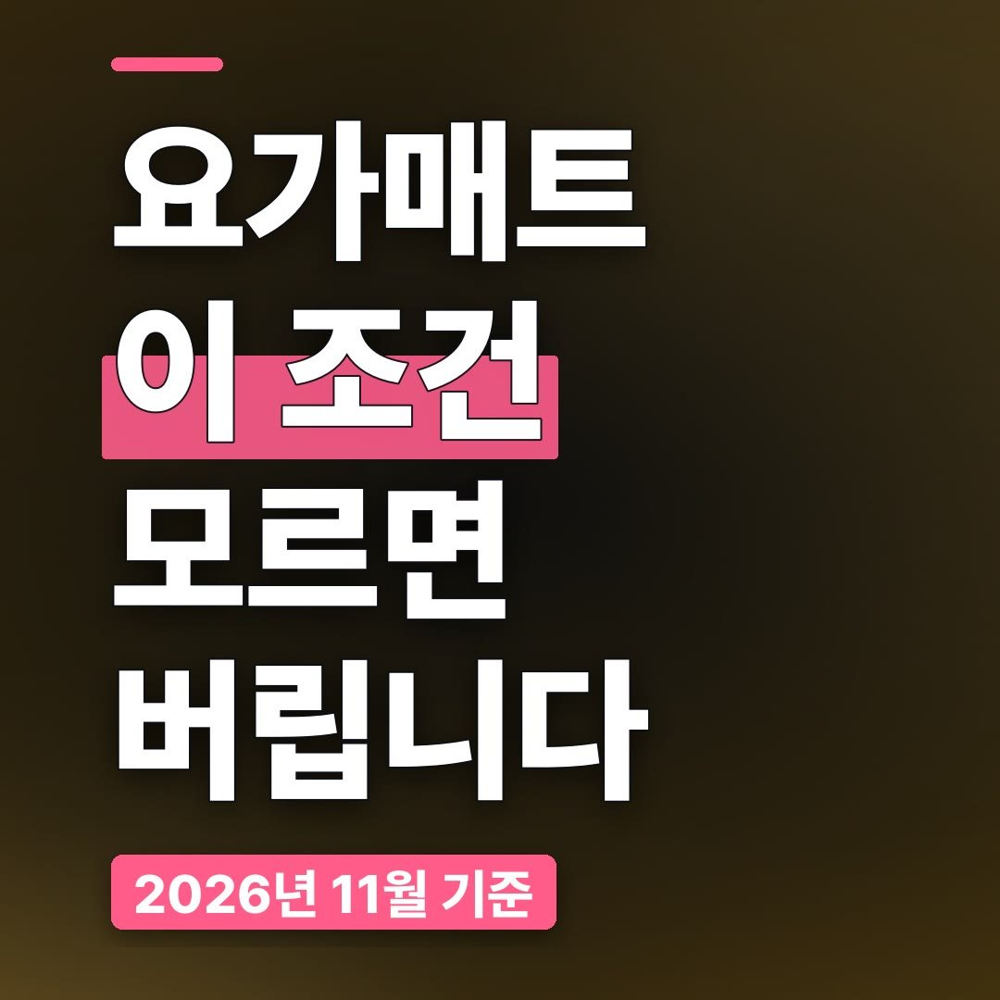
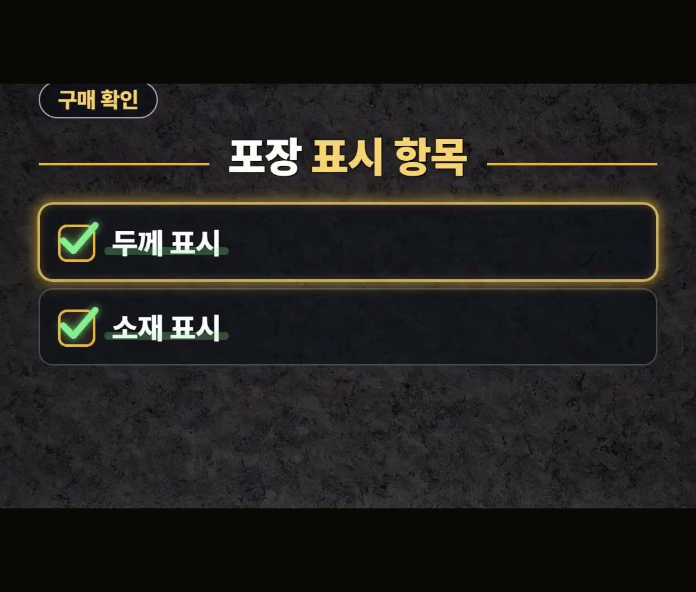
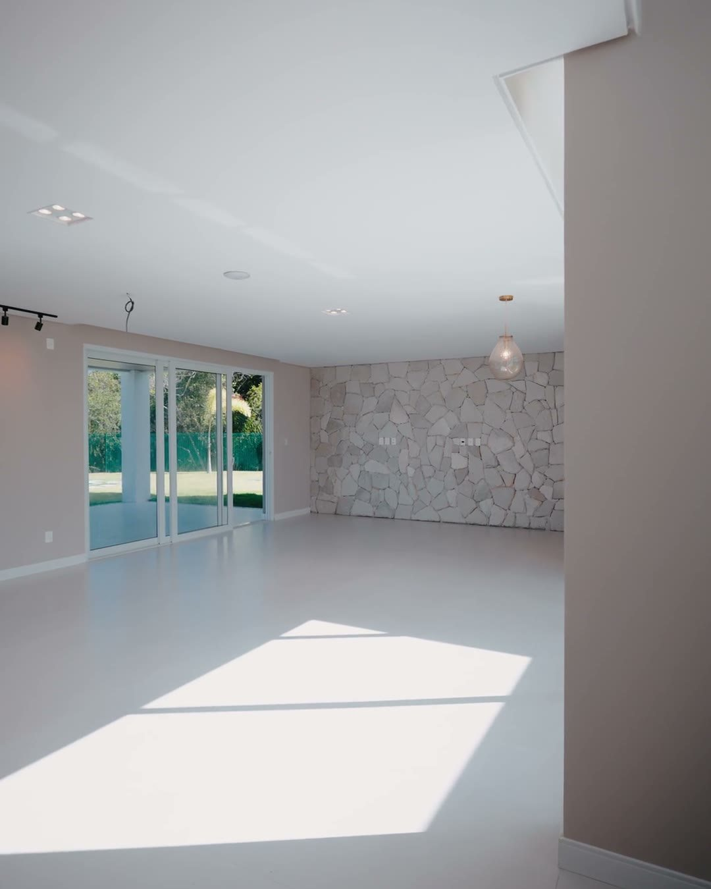
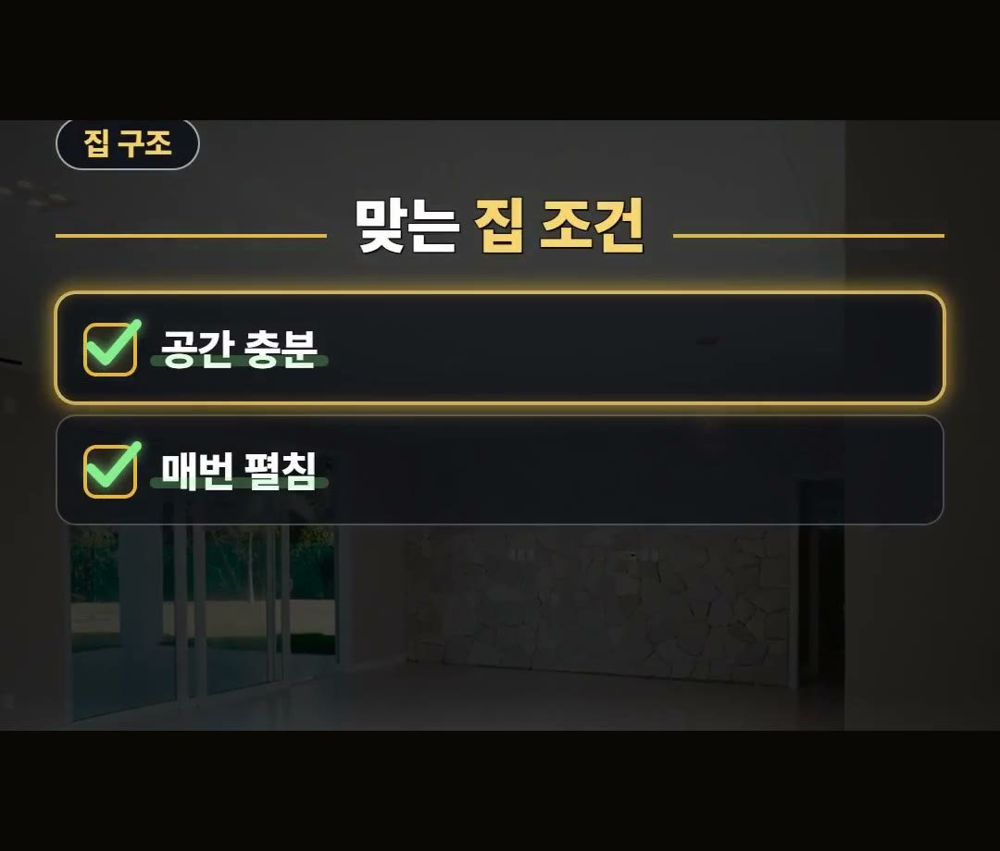
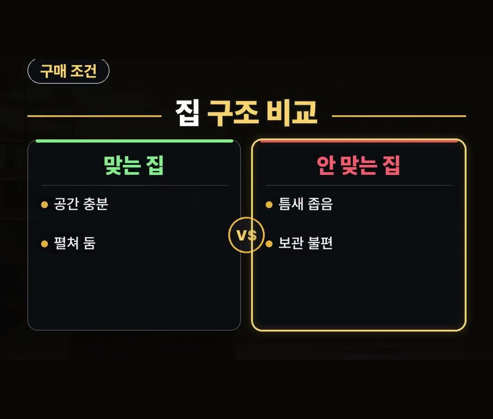

요가매트 추천, 사기 전에 포장 표시와 집 구조부터 확인해요
※ 이 글에는 제휴 링크가 포함되어 있으며, 링크를 통해 구매하시면 일정 수수료를 받을 수 있습니다. (가격은 같습니다)
※ 이 포스팅은 쿠팡 파트너스 활동의 일환으로, 이에 따른 일정액의 수수료를 제공받습니다.
요가매트를 살 때 포장에서 먼저 볼 표시는 두 가지, 두께 표시와 소재 표시예요.
여기에 세척 방법과 보관 방법까지 확인하고, 우리 집 보관 공간과 맞는지 따져 보면 좋아요.
이 글에서는 요가매트 추천을 제품 이름 대신 '어떤 집에 맞는 물건인지'로 풀어 볼게요.
돈 아끼는 연구소 아낌 소장이에요.
오늘은 포장 표시 두 가지, 두께와 소재부터 보자는 것만 정리해 봤어요.
집에 안 맞으면 보관이 힘들어 방치되기 쉽다는 점, 기억하세요! 😊

요가매트가 방치되기 쉬운 이유
요가매트는 운동할 때만 꺼내 쓰는 물건이에요.
그런데 집에 안 맞으면 보관이 힘들어서 방치되기 쉽습니다.
처음에는 마음먹고 샀어도 둘 곳이 마땅치 않으면 점점 손이 가지 않게 되죠.
그래서 요가매트 추천 글을 찾아보실 때도 어떤 물건이 좋은지만큼 '우리 집에 맞는지'를 같이 보셔야 해요.
이 글에서는 특정 제품을 고르지 않고, 살 때 확인할 것과 집 조건만 차분히 정리했어요.
포장에서 먼저 볼 표시 두 가지
살 때는 포장에 적힌 두께 표시와 소재 표시를 봅니다.
두 가지를 목록으로 적어 둘게요.
- 두께 표시
- 소재 표시
포장에 적힌 표시글부터 미리 읽어 두면 사고 나서 '내가 생각한 게 아니네' 하고 당황할 일이 줄어들 수 있어요.
어떤 두께나 소재가 좋다는 기준은 이 글에서 따로 정하지 않았어요.
포장에 무엇이 적혀 있는지 먼저 확인하는 데까지가 첫 단계예요.

세척 방법과 보관 방법, 이 순서로 확인해요
포장 표시를 봤다면 이번에는 제품 표시에 적힌 세척 방법과 보관 방법도 확인해 보세요.
순서는 이렇게 두 단계로 정리했어요.
- 1단계: 두께와 소재
- 2단계: 세척과 보관
두께와 소재를 본 다음 세척과 보관으로 넘어가는 순서예요.
표시에 적힌 세척 방법과 보관 방법을 읽어 보면 우리 집에서 관리할 수 있는 물건인지 가늠하기 쉬워요.
이 순서대로 하나씩 살펴보시면 됩니다.
요가매트 추천 비교, 맞는 집 조건부터 봐요
요가매트 추천 비교를 할 때는 제품끼리 견주기 전에 우리 집이 어떤 집인지부터 보는 편이 좋아요.
매번 펴 둘 공간이 충분한 집이라면 큰 물건도 맞습니다.
맞는 집 조건을 적어 보면 다음과 같아요.
- 공간 충분
- 매번 펼침
운동할 때마다 접고 펴고 치우는 게 아니라 펼쳐 둘 수 있는 집이라면, 보관 때문에 고민할 일이 적겠죠.
집 구조가 맞아야 방치되지 않는다는 점을 기억해 주세요.


안 맞는 집은 이렇게 구분해요
반대로 보관 틈새가 좁은 집이라면 사지 않는 편이 좋습니다.
맞는 집과 안 맞는 집을 나란히 놓고 비교해 볼게요.
- 맞는 집: 공간 충분, 펼쳐 둠
- 안 맞는 집: 틈새 좁음, 보관 불편
우리 집 크기를 먼저 떠올려 보세요.
보관이 불편한 집에서는 사 놓은 매트가 방치되기 쉬워요.
물건이 좋아도 둘 곳이 없으면 쓰기 어렵다는 이야기예요.

정리
- 살 때는 포장의 두께 표시와 소재 표시를 먼저 봅니다.
- 제품 표시의 세척 방법과 보관 방법도 확인해요.
- 펴 둘 공간이 충분한 집이면 큰 물건도 맞고, 보관 틈새가 좁은 집이면 사지 않는 편이 좋습니다.
링크는 아래에 모아 두었어요.
📌 2026년 11월 기준 정보예요. 가격은 시기에 따라 달라질 수 있어요.
사진·영상: Pexels (Alef Morais, Liliana Drew, Max Vakhtbovych, Monstera Production, Pavel Danilyuk, Yan Krukau)